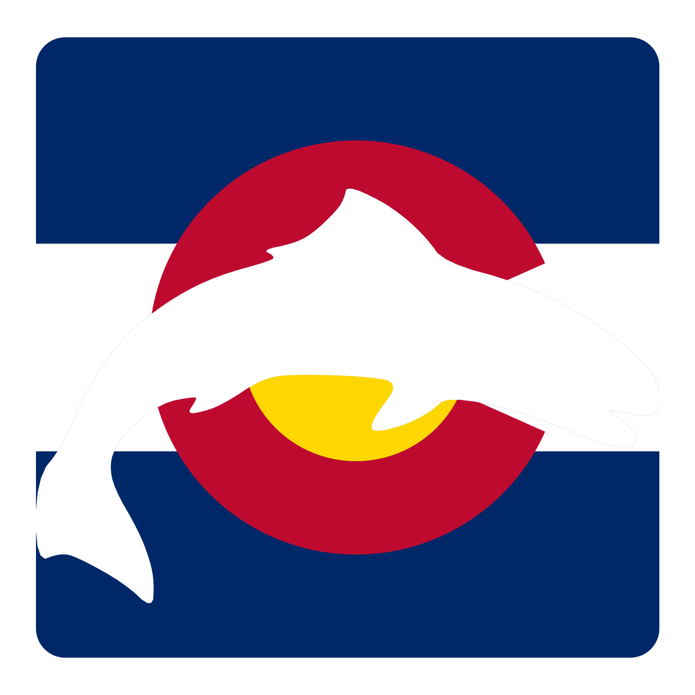

You’re offline
The COFish app shell and previously opened information remain available, but live maps, weather, stream flow, and fishing reports may require a connection.

The COFish app shell and previously opened information remain available, but live maps, weather, stream flow, and fishing reports may require a connection.